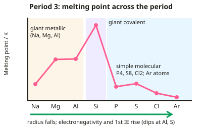

A-level Chemistry Year 12 · Topic 4
Inorganic chemistry
Inorganic chemistry looks at patterns in the periodic table and the chemistry of two important groups.
We will explain the trends across Period 3 in atomic radius, melting point and ionisation energy, then look at the reactions and uses of Group 2 metals and their compounds.
Then we study the halogens and halide ions, the tests for common ions, and how thermal stability changes down Groups 1 and 2.
- 6 subtopics
- 216 questions
- Free: 4.1 notes and 10 questions
In this topic
- 4.1PeriodicityFree below · 17 questions
- 4.2Group 2, the alkaline earth metalsOpen in Full Marks · 29 questions
- 4.3Group 7, the halogensOpen in Full Marks · 13 questions
- 4.4Qualitative analysis: flame tests and tests for carbonate, sulfate, halide, hydroxide and ammonium ionsOpen in Full Marks · 71 questions
- 4.5Thermal decomposition of Group 1 and Group 2 carbonates and nitratesOpen in Full Marks · 69 questions
- 4.6Nitrogen and sulfur: ammonia, the ammonium ion, nitrogen oxides and sulfur dioxideOpen in Full Marks · 17 questions
4.1 · Free notes
Periodicity

Key points
- Across Period 3 (Na to Ar), atomic radius decreases as increasing nuclear charge pulls electrons closer with similar shielding, and first ionisation energy generally increases (with small dips at Al and S).
- Melting points across Period 3 rise from Na to Si (giant metallic then giant covalent structures), then fall sharply from P to Ar (simple molecular or monatomic structures with only weak forces between particles).
- Electronegativity generally increases across a period and decreases down a group, as increasing atomic radius outweighs increasing nuclear charge.
- First ionisation energy generally decreases down a group as atomic radius and electron shielding increase, outweighing increasing nuclear charge.
- Elements are in blocks: the s-block (Groups 1–2), p-block (Groups 3–0) and d-block (transition elements), named after the sub-shell that holds their highest-energy electron.
In more detail
- Melting points across Period 3: Na, Mg, Al rise (metallic bonding with more delocalised electrons and smaller, more charged ions); Si highest (giant covalent); P₄, S₈, Cl₂, Ar low (simple molecular, S₈ highest of these because it is the largest molecule).
- First IE across Period 3: general increase, with dips at Al (3p electron, higher energy and shielded by 3s) and S (paired electrons in a 3p orbital repel).
- Electronegativity: increases across a period (more nuclear charge, same shielding) and decreases down a group (larger atoms, more shielding).
- Periodicity: a repeating pattern of properties across periods, caused by the repeating pattern of electron configurations.
Practice
Periodicity: 10 questions
Pick an answer to check it, or open the answer for the explanation.
1. How does atomic radius change across Period 3?
- Increases
- Decreases
- Stays the same
- Increases then decreases
Show answer
B: Decreases. Increasing nuclear charge pulls the outer electrons in closer.
2. Why does melting point rise sharply from Na to Si across Period 3?
- Structures change from simple molecular to giant metallic/covalent with stronger bonding
- Atoms get smaller only
- Elements become non-metals
- Electronegativity decreases
Show answer
A: Structures change from simple molecular to giant metallic/covalent with stronger bonding. Stronger bonding requires more energy to overcome.
3. Why does melting point drop suddenly after silicon in Period 3?
- These elements form giant structures
- These elements are simple molecular or monatomic, with only weak forces between particles
- They become metals
- They gain extra protons
Show answer
B: These elements are simple molecular or monatomic, with only weak forces between particles. Only weak intermolecular or interatomic forces need to be overcome.
4. How does electronegativity change down a group?
- Increases
- Decreases
- No change
- Becomes negative
Show answer
B: Decreases. Greater atomic radius reduces the pull on a bonding pair from further atoms.
5. Why does first ionisation energy generally decrease down a group?
- Nuclear charge decreases
- Atomic radius and shielding increase, outweighing increased nuclear charge
- Atoms become smaller
- Electrons are lost from full shells
Show answer
B: Atomic radius and shielding increase, outweighing increased nuclear charge. The outer electron is further away and more shielded, so easier to remove.
6. What is the general trend in electronegativity across Period 3?
- It decreases
- It increases
- It stays constant
- It becomes negative
Show answer
B: It increases. Increasing nuclear charge with similar shielding increases the pull on bonding electrons.
7. Which Period 3 element has the highest first ionisation energy?
- Chlorine
- Argon
- Sodium
- Silicon
Show answer
B: Argon. Argon has the largest nuclear charge of the Period 3 elements, with a full, stable outer shell. Its outer electrons are held most strongly, so it has the highest first ionisation energy.
8. First ionisation energies (kJ mol⁻¹): Na 496, Mg 738, Al 578, Si 786. Why is Al lower than Mg?
- Al has a larger atomic radius than Mg
- Al's outer electrons are paired in one orbital
- Al's outer electron is in a 3p subshell, higher in energy and shielded by 3s
- Al has fewer protons than Mg
Show answer
C: Al's outer electron is in a 3p subshell, higher in energy and shielded by 3s. Al's outermost electron is in a 3p orbital. It is higher in energy and slightly shielded by the 3s electrons, so it is easier to remove despite the greater nuclear charge.
9. Why is the first ionisation energy of sulfur lower than that of phosphorus?
- Sulfur has a larger nuclear charge
- Sulfur has more shielding
- Repulsion between paired electrons in a 3p orbital makes one easier to remove
- Sulfur's outer electron is in the 3s subshell
Show answer
C: Repulsion between paired electrons in a 3p orbital makes one easier to remove. In S (3p⁴) two electrons share one 3p orbital. Their mutual repulsion makes one electron easier to remove than the unpaired 3p electron in P (3p³).
10. Why does silicon have a very high melting point?
- Strong London forces between Si atoms
- Strong covalent bonds throughout a giant lattice must be broken
- Delocalised electrons in a metallic lattice
- Strong intermolecular hydrogen bonds
Show answer
B: Strong covalent bonds throughout a giant lattice must be broken. Silicon has a giant covalent lattice. Melting it needs a large amount of energy to break many strong covalent bonds.
Keep going in Full Marks
Full Marks has 17 questions on Periodicity (7 more than here), set out in practice levels. You also get notes and 3D models for all 6 subtopics of Inorganic chemistry, plus games, timed exams and past papers.
On your exam board
- AQATopic 3.2.1: Periodicity, Topic 3.2.2: Group 2, the alkaline earth metals, Topic 3.2.3: Group 7(17), the halogens
- OCR ATopic 3.1.1: Periodicity, Topic 3.1.2: Group 2, Topic 3.1.3: The halogens, Topic 3.1.4: Qualitative analysis
- OCR BTopic EL: Elements of life, Topic ES: Elements from the sea
- EdexcelTopic 1: Atomic structure and the periodic table, Topic 4: Inorganic chemistry and the periodic table
- CambridgeTopic 9: The Periodic Table: chemical periodicity, Topic 10: Group 2, Topic 11: Group 17, Topic 12: Nitrogen and sulfur